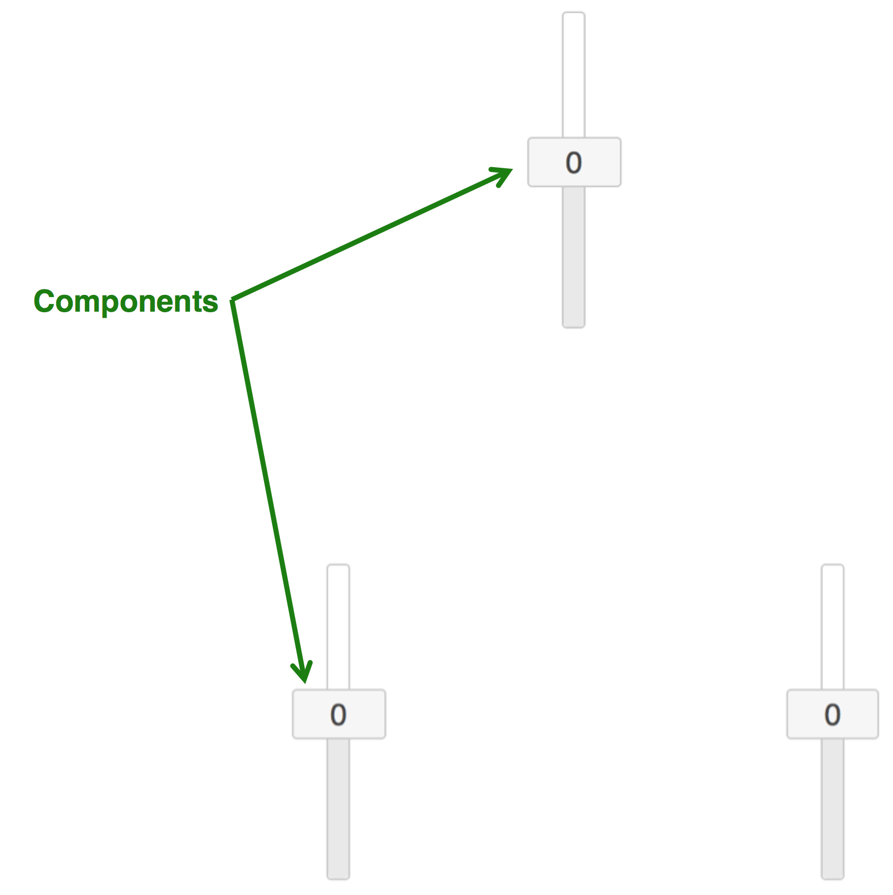
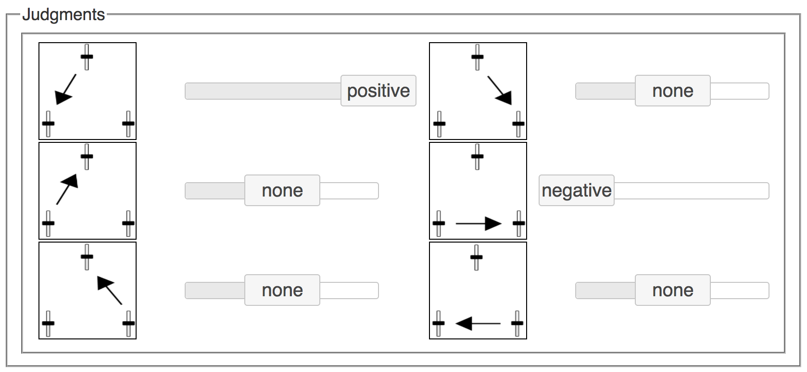

Your task will be to learn how some causal devices work.
The devices will look like this:
There will be many possible relationships between the components:

Some of the components are connected together while others are not. Your job is to work out where the connections are in each device. As soon as you believe that there is a causal connection, please make your judgment in the "Judgments" box:
As you can see, there are three possible responses.
There are 23 devices in total.
You will get to interact with each device for 45 seconds.
During this time, you will get to interact with the devices by clicking and dragging their values.
The components move around with some noise, but there are no outside factors affecting their motion.
Note: Please do not change the zoom level during the experiment. The experiment only works properly if you have your browser zoom level on 100% throughout. (You can change the zoom level to 100% by pressing "cmd+0" on a mac or "ctrl+0" on a PC.)